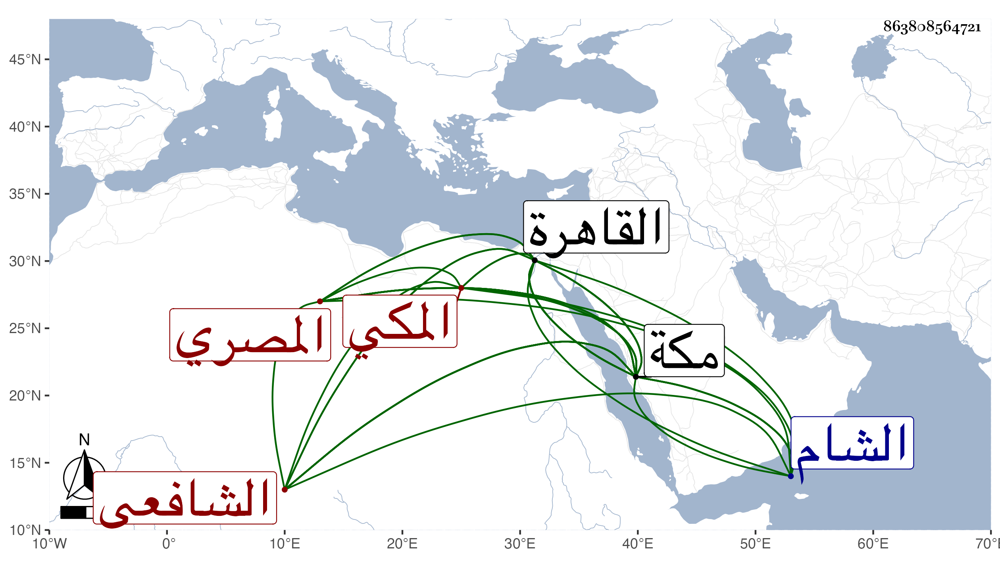

0902Sakhawi.DawLamic.ITO20230111-ara1.EIS1600.863808564721
Biography ID: 863808564721
1073
علي بن محمد الأكبر بن علي بن محمد بن عمر بن عبد الله بن أبي بكر نور الدين المصري الأصل المكي الشافعي الآتي جده قريبا وأبوه وأخواه المحمدان أبو الخير وأبو البركات وأبوهم ويعرف بابن الفاكهي . ولد في ذي الحجة سنة ست وثلاثين وثمانمائة بمكة ونشأ بها فحفظ القرآن وأربعي النووي والمنهاج الفرعي والأصلي وألفية النحو والحديث والشاطبية والتلخيص والعمدة للنسفي والشافية لابن الحاجب في الصرف وعرض على شيخنا فيما زعم وابن الديري وابن الهمام وغيرهم واشتغل في بلده والقاهرة والشام وغيرها ومن شيوخه في الفقه العلم البلقيني والمناوي والمحلي والعبادي وإمام الكاملية والفخر عثمان المقسي وزكريا والبدر بن قاضي شهبة والزين خطاب وإبراهيم العجلوني وفي العربية الشهاب بن الزين عبادة المالكي وابن الزرعي وخطاب وابن يونس المغربي وفي الأصول الشرواني والكافياجي والمقسي وفي أصول الدين الشرواني وعنه وعن التقي والعلاء الحصنيين أخذ المعاني والبيان وكذا لازم الجوجري وبعضهم أكثر عنه أخذا من بعض ، وسمع الحديث على الزين الأميوطي والتقي بن فهد وآخرين كالولوي البلقيني وأخذ عن عبد المعطي في البيضاوي وغيره ، وكثر اجتماعه بي وأنا بمكة وقبلها أيضا وقرأ بعض تصانيفي عند شيخه ابن يونس وأخذ عني أشياء بل كتبت عنه من نظمه وبرع في الفقه والأصلين والعربية والمعاني والبيان وغيرها من الفضائل ، وأذن له غير وأحد في التدريس والإفتاء وتصدى لإقراء الطلبة بالمسجد الحرام فانتفع به جماعة وأكثر من الحضور عند عالم مكة البرهاني والأخذ عنه ، وكان مع تقلله مفوها طلق العبارة قادرا على التعبير عن مراده بحاثا نظارا ذا نظم ونثر ولكنه أذهب محاسنه فإنه قدم القاهرة مرافعا في عالم مكة وما حمدته في هذا ولا في بعض أفعاله وبعد المرافعة المشار إليها رجع إلى مكة فأقام بها واتفق وجود خبيئة في خربة كانت بيده فنم عليه بعض العمال حتى أخذت أو جلها منه فتألم لذلك وهو الجاني على نفسه فإنه أساء التدبير ولم يلبث أن مات في مغرب ليلة الأربعاء خامس رمضان سنة ثمانين ودفن عند سلفه بالقرب من الفضيل بن عياض رحمه الله وعفا عنه .
